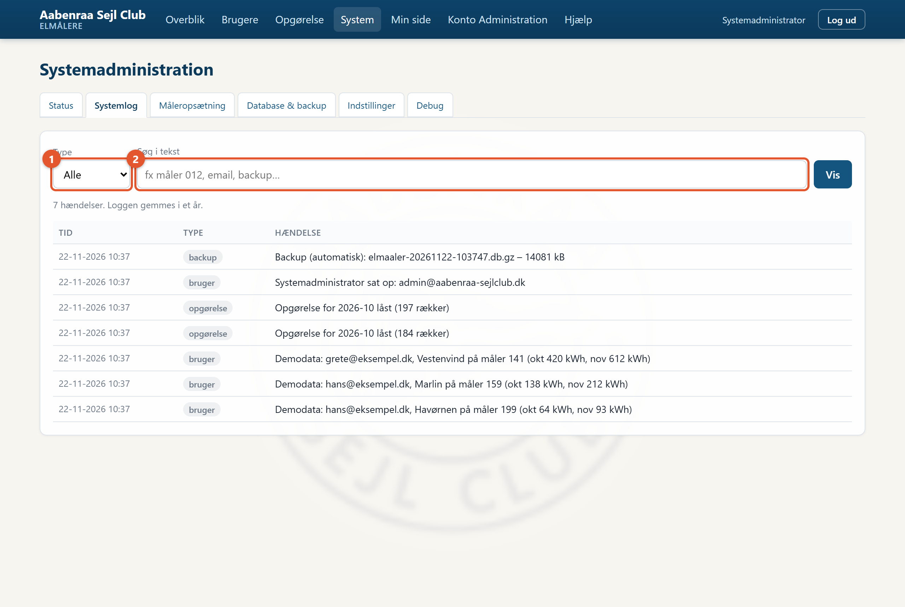
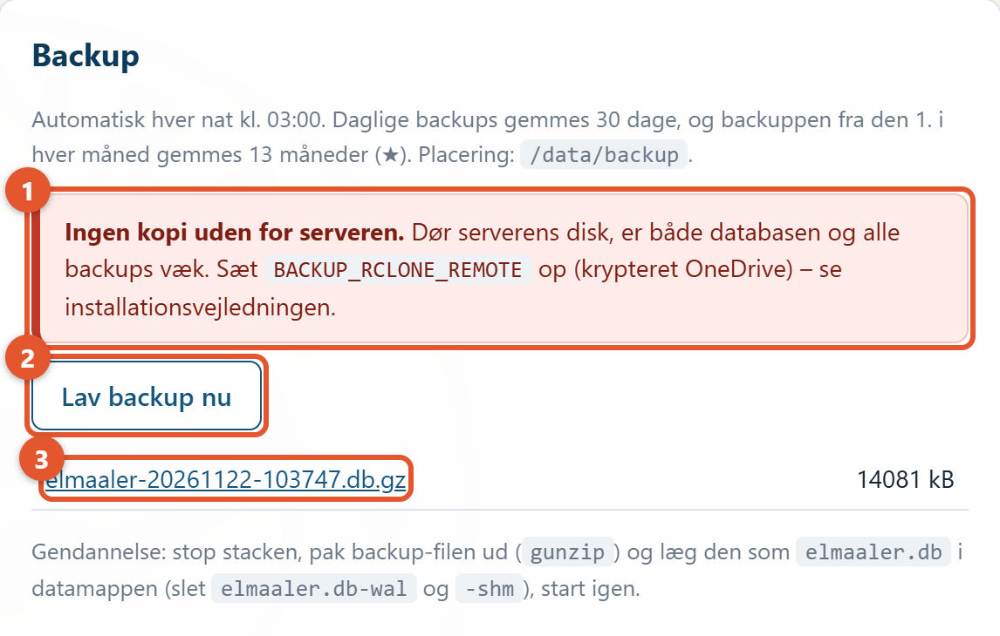
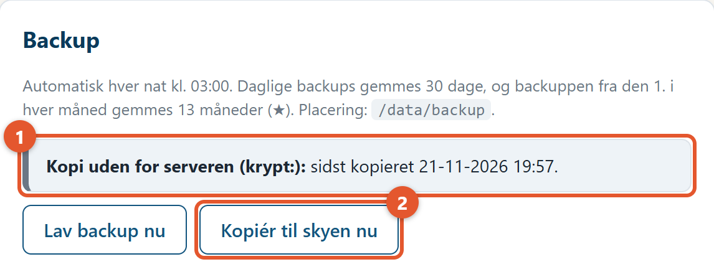
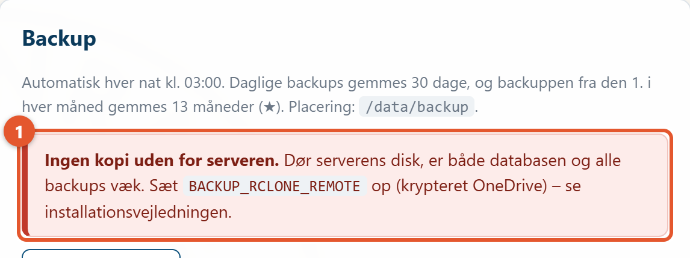

Elmålere
Manual for systemadministration
Aabenraa Sejl Club
Version november 2026
Indhold
- 1 · Roller og adgang
- De tre slags brugere
- Første systemadministrator
- 2 · Menuen System
- Status og Zigbee-målere
- Systemloggen
- Måleropsætning
- Database og backup
- Nulstil fejlmålt forbrug
- Indstillinger
- Debug (test)
- 3 · Månedsrapporten til bestyrelsen
- 4 · Backup i OneDrive
- Det skal du bruge
- Trin 1–6: opsætning
- Daglig kontrol
- Gendan fra OneDrive
- 5 · Drift og vedligehold
- Opdatering af systemet
- Backup – det vigtigste
- Automatiske job
- Manualerne på websiden
- Teknisk dokumentation
1
Roller og adgang
De tre slags brugere
| Bruger | Kan |
|---|
bruger
Medlem med båd | Se eget forbrug på Min side, vælge e-mails, bestille forbrugsrapport, skifte e-mail og adgangskode. |
kontor
Havnekontoret | Alt det, et medlem kan, plus: se alle målere, oprette og ændre brugere, tildele og fjerne målere, lave månedsopgørelser og hente afregning. |
admin
Systemadministrator | Alt det, havnekontoret kan, plus menuen System: status, systemlog, måleropsætning, database og backup, indstillinger (forbrugsgrupper, priser, mails) og test. |
Hvilke menupunkter du ser øverst på siden, afhænger af din rolle. Et medlem ser kun Min side og Konto Administration.
Første systemadministrator
Den e-mail, der står i ADMIN_EMAIL i serverens opsætning (.env), bliver automatisk systemadministrator ved start,
hvis der ikke findes nogen. Flere administratorer oprettes under Brugere ved at give rollen admin – det kan kun en
systemadministrator.
Havnekontorets og medlemmernes siderSom systemadministrator har du også menupunkterne Overblik,
Brugere og Opgørelse. De er beskrevet i Manual for havnekontoret; Min side i Manual for medlemmer.
2
Menuen SystemFor brugere med rollen admin
Status og Zigbee-målere

- System i menuen – kun for systemadministratorer.
- Fanerne: Status, Log, Måleropsætning, Database & backup, Indstillinger og Debug.
- Zigbee-målere: forbindelse og signalstyrke (linkquality) for hver måler. Målere med svagt signal står øverst – flyt evt. en Zigbee-router tættere på.
Systemloggen

- Type: fx fejl, backup, mail, måler, bruger, tildeling, opgørelse.
- Søg i teksten, fx et målernummer eller en e-mail.
Alt vigtigt skrives i loggen: logins, ændringer af brugere og tildelinger, afsendte mails, backup, fejl og målere der går offline.
Måleropsætning

- Søg efter måler eller bruger.
- Ret placering (fx S12-U3), aktiv og note for mange målere på én gang, og tryk Gem ændringer. Inaktive målere giver ikke offline-varsler.
Database og backup

- Kopi uden for serveren: grå boks = OneDrive-kopien er i orden (med tidspunkt). Rød boks = der er ingen kopi, eller den seneste fejlede.
- Lav backup nu – fx før en større ændring. Kopiér til skyen nu sender de nyeste backups til OneDrive.
- Hent en backup ved at klikke på den. ★ = månedsbackup (den 1.), som gemmes i 13 måneder. De daglige gemmes i 30 dage.
Krypteringskoderne til OneDriveBackupperne i OneDrive er krypterede. Uden de to koder, der blev lavet ved opsætningen, kan de ikke læses. Koderne skal ligge i klubbens password manager eller i pengeskabet. Opsætning og gendannelse: se kapitel 4.
Nulstil fejlmålt forbrug

Har en måler målt forkert i en periode (fx under en fejl eller en test), kan forbruget i perioden sættes til 0. Tryk først
Vis forbrug i perioden for at se, hvad der rammes. Selve nulstillingen kræver, at du skriver JA. Der tages backup
først, handlingen logges, og berørte låste måneder genberegnes. Tællerstandene røres ikke.
Indstillinger

- Ekstra modtagere af havnekontor-mails, fx kassereren.
- Månedsrapport til bestyrelsen – e-mailadresse(r). Tom = ingen rapport.
- Tidspunkt for de faste e-mails, offline-varsel efter X minutter og advarsel ved X % af gruppegrænsen.

- Ret forbrugsgrupper, priser og afregningsmåneder og tryk Gem forbrugsgrupper. Ændringen gælder nye beregninger – allerede låste måneder ændres kun ved genberegning.
Debug (test)

- Læg simuleret forbrug på en måler for at afprøve fx advarsler og grupper. Så længe der findes simuleret forbrug, vises en rød advarsel på alle sider, e-mails til medlemmer er sat på pause, og bestyrelsesrapporten sendes ikke. Slet altid det simulerede forbrug igen.
3
Månedsrapporten til bestyrelsen
Den 1. i hver måned fra december til april får bestyrelsen automatisk en PDF-rapport for den afsluttede vintermåned, sendt til
bestyrelse@aabenraa-sejlclub.dk. Den fulde opgørelse pr. båd er vedhæftet som CSV-fil (Excel).
Eksempel med opdigtede tal.
Side 1 – økonomi og forbrug
- Nøgletal: samlet forbrug (op/ned i forhold til måneden før), beløb til opkrævning, antal afregnede både og gennemsnit pr. båd.
- Forbrugsgrupper: antal både, andel, kWh og beløb pr. gruppe.
- Forbrug pr. dag for alle målere med gennemsnitslinje.
- Vintersæsonen indtil nu: kWh og opkrævning pr. måned og i alt.
Side 2 – detaljer og drift
- De 10 største forbrug med båd og medlem.
- Drift og datakvalitet: målere online, hvor mange målinger der er modtaget, offline-hændelser, forbindelse til Home Assistant, backup, nye og afsluttede tildelinger, ledige målere.
- Opmærksomhedspunkter: forbrug uden tildelt bruger (kan ikke opkræves), tildelte målere uden forbrug, manglende backup og sæsonafslutning.
Rapporten kan også hentes når som helst under Opgørelse → Månedsrapport (PDF) af havnekontoret.
4
Backup i OneDriveOpsætning, kontrol og gendannelse
Hver nat efter backuppen kopieres den med programmet rclone til en mappe i klubbens OneDrive. Filerne krypteres
før de forlader serveren, så Microsoft – eller andre med adgang til OneDrive-kontoen – kun ser uforståelige filnavne og data.
Databasen indeholder medlemmernes navne, e-mails og telefonnumre, så krypteringen er også et GDPR-krav.
Kopierne i OneDrive bliver aldrig slettet af en tom eller hacket server. Der ryddes kun op efter faste regler:
daglige kopier efter 30 dage, kopien fra den 1. i måneden efter 13 måneder.
Brug klubbens kontoBrug en OneDrive-konto, der tilhører klubben – ikke en privat – så backupperne ikke forsvinder ved bestyrelsesskift.
Det skal du bruge
- Adgang til serveren med SSH (eller Dockges terminal).
- Din egen pc med en browser – til at logge ind i OneDrive.
- Klubbens Microsoft-konto (e-mail og adgangskode).
- Ca. 20 minutter.
Trin 1 – Opdatér serveren
rclone skal være med i programmets Docker-image. Kør på serveren:
cd /opt/stacks/elmaaler && docker compose up -d --build
Trin 2 – Installér rclone på din pc
rclone bruges kun på pc'en til at logge ind i OneDrive med browseren. Åbn PowerShell og kør:
winget install Rclone.Rclone
Luk PowerShell og åbn den igen bagefter.
Trin 3 – Opret forbindelsen til OneDrive
Kør på serveren: docker exec -it elmaaler rclone config og svar sådan (Enter = standardsvaret):
| rclone spørger | Du svarer |
|---|
n/s/q> | n (ny forbindelse) |
name> | onedrive |
Storage> | skriv onedrive |
client_id> og client_secret> | Enter (tomt) |
region> | 1 (Microsoft Cloud Global) |
Edit advanced config? | n |
Use web browser to automatically authenticate? | n |
config_token> | se nedenfor |
- rclone viser en kommando, fx
rclone authorize "onedrive". Kør den i PowerShell på din pc.
- Browseren åbner. Log ind med klubbens Microsoft-konto og godkend.
- PowerShell viser en lang tekst mellem
---> og <---End paste. Kopiér teksten mellem pilene.
- Sæt den ind ved
config_token> på serveren og tryk Enter.
| rclone spørger | Du svarer |
|---|
config_type> | 1 (OneDrive Personal or Business) |
config_driveid> | 1 (den første/eneste) |
Is that okay? / Keep this "onedrive" remote? | y |
Trin 4 – Opret den krypterede mappe
Stadig i rclone config:
| rclone spørger | Du svarer |
|---|
e/n/d/r/c/s/q> | n (ny) |
name> | krypt |
Storage> | skriv crypt |
remote> | onedrive:Elmaaler-backup |
filename_encryption> | 1 (standard) |
directory_name_encryption> | 1 (true) |
y/g> (adgangskode) | g (lav en stærk), vælg 128, og y for at bruge den |
y/g/n> (salt / password2) | g, 128, y |
Edit advanced config? | n |
Keep this "krypt" remote? | y |
e/n/d/r/c/s/q> | q (afslut) |
⚠ Skriv de to adgangskoder ned, som rclone viser i trin 4Gem dem i klubbens password manager eller i en
kuvert i pengeskabet – samme dag. Uden dem kan backupperne i OneDrive ikke læses, heller ikke af en it-kyndig.
Går serveren tabt, er de nødvendige for at gendanne.
Trin 5 – Slå kopieringen til
Skriv denne linje i Dockges .env-felt (eller i .env), gem, og genstart stacken:
BACKUP_RCLONE_REMOTE=krypt:
Trin 6 – Afprøv

- Gå til System → Database & backup. En grå boks med tidspunktet for sidste kopi betyder, at alt er i orden.
- Tryk Kopiér til skyen nu, vent et minut og genindlæs siden. Tidspunktet skal være opdateret.
Åbn OneDrive i browseren: mappen Elmaaler-backup indeholder nu filer med uforståelige navne. Det er korrekt – de er krypterede.
Daglig kontrol

- Rød boks "Ingen kopi uden for serveren" – OneDrive er ikke sat op (
BACKUP_RCLONE_REMOTE mangler).
- Rød boks med "Seneste forsøg fejlede" – kopieringen fejlede. Fejlen står i boksen og i System → Log, og havnekontoret får en mail.
- Har OneDrive-forbindelsen ikke været brugt i lang tid, eller er klubbens adgangskode skiftet, skal den logges ind igen:
kør
docker exec -it elmaaler rclone config reconnect onedrive: og følg trin 3.
Gendan fra OneDrive
Bruges, hvis serveren er gået tabt, eller databasen skal tilbage til en tidligere dato.
- Sæt rclone op på den maskine, der skal gendanne (ny server eller din pc), som i trin 3 – men i trin 4 vælger du
y og skriver de to gemte adgangskoder i stedet for at lave nye.
- Vis backupperne:
rclone ls krypt:
- Hent den ønskede:
rclone copy krypt:elmaaler-20261201-030000.db.gz .
- Stop stacken, pak filen ud (
gunzip) og læg den som elmaaler.db i datamappen. Slet
elmaaler.db-wal og elmaaler.db-shm, hvis de findes, og start stacken igen.
- Log ind og tjek, at brugere, tildelinger og opgørelser er, som de skal være.
Øv det én gang om åretHent en backup til en test-pc og se, at den kan åbnes. En backup er først sikker, når man har set den virke.
5
Drift og vedligehold
Opdatering af systemet
Programmet ligger i et Docker-image. Efter en ny version skal imaget altid bygges om – ellers kører serveren videre med den gamle kode:
- Hent den nye kode til
/opt/stacks/elmaaler/elmaaler/ (git pull eller kopiér mappen).
- Kør
cd /opt/stacks/elmaaler && docker compose up -d --build.
- Log ind og tjek System → Status og System → Log for fejl.
Backup – det vigtigste
- Backup tages hver nat kl. 03. Daglige gemmes 30 dage, den 1. i måneden 13 måneder.
- En krypteret kopi lægges i klubbens OneDrive. Tjek jævnligt, at System → Database & backup viser en grå boks med et nyt tidspunkt. Se kapitel 4.
- De to krypteringskoder skal ligge i klubbens password manager eller i pengeskabet.
- Prøv en gendannelse én gang om året på en test-pc.
Automatiske job
| Hvornår | Hvad |
|---|
| Hvert 30. sekund | Henter målinger fra Home Assistant |
| Hvert 15. minut | Gemmer en aflæsning pr. måler; advarsler om dyrere gruppe |
| Hvert minut | Tjekker for målere uden forbindelse (varsel efter 60 min) |
| Hver nat kl. 03 | Backup og kopi til OneDrive |
| Hver morgen kl. 06 | Daglige/ugentlige e-mails |
| Den 1. kl. 00:20 | Forrige måned låses |
| Den 1. kl. 06 | Månedsmails; nov–mar PDF-rapport til bestyrelsen |
Manualerne på websiden
Under Hjælp ser hver bruger de manualer, der passer til rollen: medlemmer ser medlemsmanual og quickguide, havnekontoret også sine egne, og systemadministratoren alle. Manualerne laves om med docs/manual/byg.py (se docs/manual/laes-mig.md) og kommer på serveren ved næste opdatering.
Teknisk dokumentation
Installation, opsætning af Home Assistant/Zigbee2MQTT, mail, OneDrive-backup og gendannelse står i
docs/07-elmaaler-installation.md i projektet på GitHub.